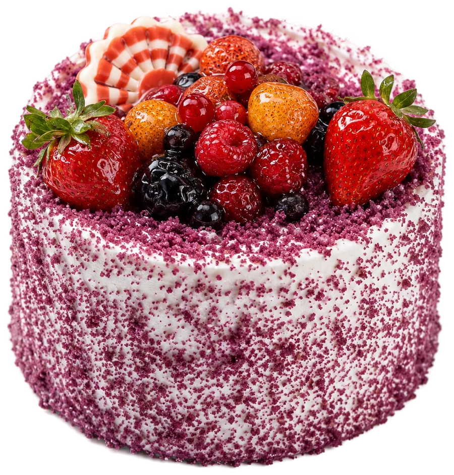
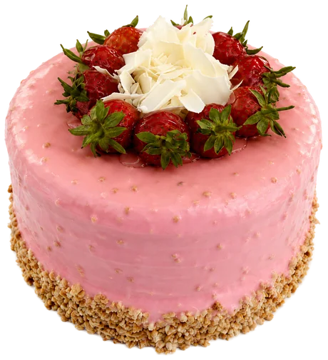
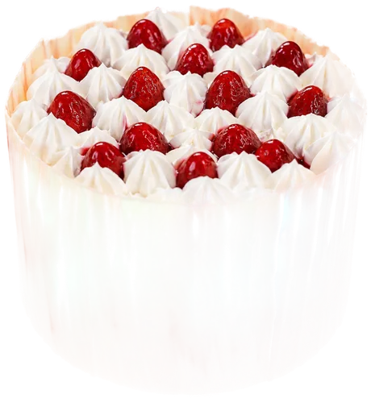
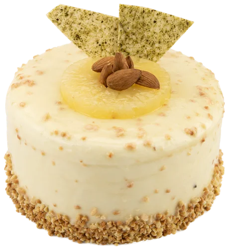
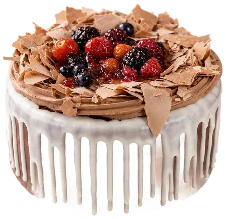
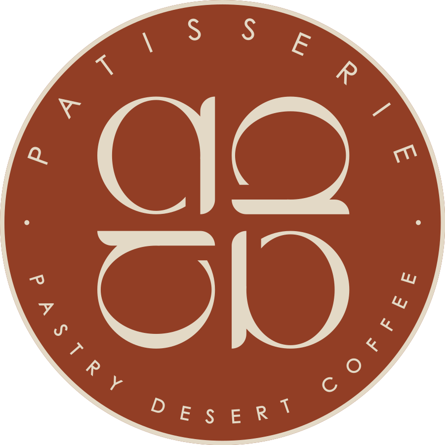

Yaş Pastalar
Tatlı Bir Başlangıç
Her kat elde hazırlanır: taze krema, gerçek tereyağı ve mevsim meyveleri. Doğum günü, kutlama ya da sadece canınız çektiği için.





Kahvaltılıklar
Güne Sıcacık
Fırından yeni çıkmış poğaça ve kruvasanlar, serpme kahvaltı tabakları ve günün ilk çayı — sabahlar burada başlar.

Fotoğraflar yakındaTatlılar
Kaşık Kaşık
Sütlü tatlılardan şerbetlilere, profiterolden cheesecake'e — günün her saatine bir tatlı bahane.
Fotoğraflar yakında
el yapımıgünlük tazemevsim meyvelerigerçek tereyağı
el yapımıgünlük tazemevsim meyvelerigerçek tereyağı
İçecekler & Kahve
Fincanın Sıcak Tarafı
Özenle kavrulmuş çekirdekler, ince demlenmiş çaylar, ev yapımı limonata ve taze sıkma meyve suları.
Menüyü Aç
Sayfaları çevirerek gezin
Fotoğraflar yakında
Bize Uğrayın
Çayınız Demlendi
Adres
Adres bilgisi
çok yakında
Çalışma Saatleri
Her gün
08.00 — 23.00
Rezervasyon
Telefon numarası
çok yakında